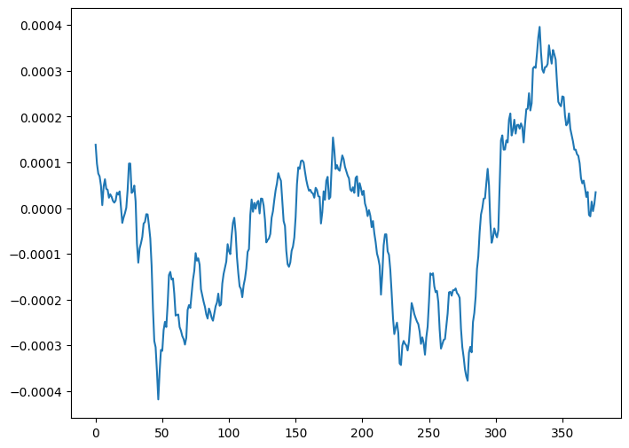

Environment setup
Contents
Environment setup#
!pip install pynwb
!pip install matplotlib
from pynwb import NWBHDF5IO
import numpy as np
import matplotlib.pyplot as plt
Read NWB files#
lfp_filepath = "../../../data/probeA_lfp.nwb"
stim_filepath = "../../../data/spike_times.nwb"
lfp_io = NWBHDF5IO(lfp_filepath, mode="r", load_namespaces=True)
lfp_file = lfp_io.read()
stim_io = NWBHDF5IO(stim_filepath, mode="r", load_namespaces=True)
stim_file = stim_io.read()
lfp = lfp_file.acquisition["probe_0_lfp_data"]
series = lfp.data
stimulus_names = list(stim_file.intervals.keys())
print(stimulus_names)
['ICkcfg0_presentations', 'ICkcfg1_presentations', 'ICwcfg0_presentations', 'ICwcfg1_presentations', 'RFCI_presentations', 'invalid_times', 'sizeCI_presentations', 'spontaneous_presentations']
Visualizing stimuli#
align stimulus and lfp
identify events within lfp
get window of lfp around event
split lfp eventwise into 3d array
calculate average across events
calculate average across nodes and events
stim_name = "ICwcfg1_presentations"
stim_table = stim_file.intervals[stim_name]
print({frame for frame in stim_table.frame})
{0.0, 1.0, 2.0, 3.0, 4.0, 5.0, 6.0, 7.0, 8.0, 9.0, 10.0, 11.0, 12.0, 13.0, 14.0, 15.0, 16.0, 17.0, 18.0, 19.0, 20.0, 21.0}
stim_table[100:150]
| start_time | stop_time | stimulus_name | stimulus_block | frame | stimulus_index | tags | timeseries | |
|---|---|---|---|---|---|---|---|---|
| id | ||||||||
| 100 | 139.290235 | 139.690591 | ICwcfg1 | 0.0 | 13.0 | 0.0 | [stimulus_time_interval] | [(101, 1, timestamps pynwb.base.TimeSeries at ... |
| 101 | 139.690591 | 140.090946 | ICwcfg1 | 0.0 | 0.0 | 0.0 | [stimulus_time_interval] | [(102, 1, timestamps pynwb.base.TimeSeries at ... |
| 102 | 140.090946 | 140.491284 | ICwcfg1 | 0.0 | 3.0 | 0.0 | [stimulus_time_interval] | [(103, 1, timestamps pynwb.base.TimeSeries at ... |
| 103 | 140.491284 | 140.891605 | ICwcfg1 | 0.0 | 0.0 | 0.0 | [stimulus_time_interval] | [(104, 1, timestamps pynwb.base.TimeSeries at ... |
| 104 | 140.891605 | 141.291925 | ICwcfg1 | 0.0 | 2.0 | 0.0 | [stimulus_time_interval] | [(105, 1, timestamps pynwb.base.TimeSeries at ... |
| 105 | 141.291925 | 141.692269 | ICwcfg1 | 0.0 | 0.0 | 0.0 | [stimulus_time_interval] | [(106, 1, timestamps pynwb.base.TimeSeries at ... |
| 106 | 141.692269 | 142.092612 | ICwcfg1 | 0.0 | 8.0 | 0.0 | [stimulus_time_interval] | [(107, 1, timestamps pynwb.base.TimeSeries at ... |
| 107 | 142.092612 | 142.492946 | ICwcfg1 | 0.0 | 0.0 | 0.0 | [stimulus_time_interval] | [(108, 1, timestamps pynwb.base.TimeSeries at ... |
| 108 | 142.492946 | 142.893271 | ICwcfg1 | 0.0 | 13.0 | 0.0 | [stimulus_time_interval] | [(109, 1, timestamps pynwb.base.TimeSeries at ... |
| 109 | 142.893271 | 143.293595 | ICwcfg1 | 0.0 | 0.0 | 0.0 | [stimulus_time_interval] | [(110, 1, timestamps pynwb.base.TimeSeries at ... |
| 110 | 143.293595 | 143.693947 | ICwcfg1 | 0.0 | 1.0 | 0.0 | [stimulus_time_interval] | [(111, 1, timestamps pynwb.base.TimeSeries at ... |
| 111 | 143.693947 | 144.094298 | ICwcfg1 | 0.0 | 0.0 | 0.0 | [stimulus_time_interval] | [(112, 1, timestamps pynwb.base.TimeSeries at ... |
| 112 | 144.094298 | 144.494638 | ICwcfg1 | 0.0 | 10.0 | 0.0 | [stimulus_time_interval] | [(113, 1, timestamps pynwb.base.TimeSeries at ... |
| 113 | 144.494638 | 144.894967 | ICwcfg1 | 0.0 | 0.0 | 0.0 | [stimulus_time_interval] | [(114, 1, timestamps pynwb.base.TimeSeries at ... |
| 114 | 144.894967 | 145.295295 | ICwcfg1 | 0.0 | 1.0 | 0.0 | [stimulus_time_interval] | [(115, 1, timestamps pynwb.base.TimeSeries at ... |
| 115 | 145.295295 | 145.695643 | ICwcfg1 | 0.0 | 0.0 | 0.0 | [stimulus_time_interval] | [(116, 1, timestamps pynwb.base.TimeSeries at ... |
| 116 | 145.695643 | 146.095990 | ICwcfg1 | 0.0 | 0.0 | 0.0 | [stimulus_time_interval] | [(117, 1, timestamps pynwb.base.TimeSeries at ... |
| 117 | 146.095990 | 146.496324 | ICwcfg1 | 0.0 | 0.0 | 0.0 | [stimulus_time_interval] | [(118, 1, timestamps pynwb.base.TimeSeries at ... |
| 118 | 146.496324 | 146.896645 | ICwcfg1 | 0.0 | 11.0 | 0.0 | [stimulus_time_interval] | [(119, 1, timestamps pynwb.base.TimeSeries at ... |
| 119 | 146.896645 | 147.296965 | ICwcfg1 | 0.0 | 0.0 | 0.0 | [stimulus_time_interval] | [(120, 1, timestamps pynwb.base.TimeSeries at ... |
| 120 | 147.296965 | 147.697325 | ICwcfg1 | 0.0 | 5.0 | 0.0 | [stimulus_time_interval] | [(121, 1, timestamps pynwb.base.TimeSeries at ... |
| 121 | 147.697325 | 148.097684 | ICwcfg1 | 0.0 | 0.0 | 0.0 | [stimulus_time_interval] | [(122, 1, timestamps pynwb.base.TimeSeries at ... |
| 122 | 148.097684 | 148.498028 | ICwcfg1 | 0.0 | 13.0 | 0.0 | [stimulus_time_interval] | [(123, 1, timestamps pynwb.base.TimeSeries at ... |
| 123 | 148.498028 | 148.898357 | ICwcfg1 | 0.0 | 0.0 | 0.0 | [stimulus_time_interval] | [(124, 1, timestamps pynwb.base.TimeSeries at ... |
| 124 | 148.898357 | 149.298685 | ICwcfg1 | 0.0 | 20.0 | 0.0 | [stimulus_time_interval] | [(125, 1, timestamps pynwb.base.TimeSeries at ... |
| 125 | 149.298685 | 149.699025 | ICwcfg1 | 0.0 | 0.0 | 0.0 | [stimulus_time_interval] | [(126, 1, timestamps pynwb.base.TimeSeries at ... |
| 126 | 149.699025 | 150.099364 | ICwcfg1 | 0.0 | 3.0 | 0.0 | [stimulus_time_interval] | [(127, 1, timestamps pynwb.base.TimeSeries at ... |
| 127 | 150.099364 | 150.499700 | ICwcfg1 | 0.0 | 0.0 | 0.0 | [stimulus_time_interval] | [(128, 1, timestamps pynwb.base.TimeSeries at ... |
| 128 | 150.499700 | 150.900033 | ICwcfg1 | 0.0 | 7.0 | 0.0 | [stimulus_time_interval] | [(129, 1, timestamps pynwb.base.TimeSeries at ... |
| 129 | 150.900033 | 151.300365 | ICwcfg1 | 0.0 | 0.0 | 0.0 | [stimulus_time_interval] | [(130, 1, timestamps pynwb.base.TimeSeries at ... |
| 130 | 151.300365 | 151.700709 | ICwcfg1 | 0.0 | 0.0 | 0.0 | [stimulus_time_interval] | [(131, 1, timestamps pynwb.base.TimeSeries at ... |
| 131 | 151.700709 | 152.101052 | ICwcfg1 | 0.0 | 0.0 | 0.0 | [stimulus_time_interval] | [(132, 1, timestamps pynwb.base.TimeSeries at ... |
| 132 | 152.101052 | 152.501384 | ICwcfg1 | 0.0 | 3.0 | 0.0 | [stimulus_time_interval] | [(133, 1, timestamps pynwb.base.TimeSeries at ... |
| 133 | 152.501384 | 152.901705 | ICwcfg1 | 0.0 | 0.0 | 0.0 | [stimulus_time_interval] | [(134, 1, timestamps pynwb.base.TimeSeries at ... |
| 134 | 152.901705 | 153.302025 | ICwcfg1 | 0.0 | 11.0 | 0.0 | [stimulus_time_interval] | [(135, 1, timestamps pynwb.base.TimeSeries at ... |
| 135 | 153.302025 | 153.702377 | ICwcfg1 | 0.0 | 0.0 | 0.0 | [stimulus_time_interval] | [(136, 1, timestamps pynwb.base.TimeSeries at ... |
| 136 | 153.702377 | 154.102728 | ICwcfg1 | 0.0 | 10.0 | 0.0 | [stimulus_time_interval] | [(137, 1, timestamps pynwb.base.TimeSeries at ... |
| 137 | 154.102728 | 154.503064 | ICwcfg1 | 0.0 | 0.0 | 0.0 | [stimulus_time_interval] | [(138, 1, timestamps pynwb.base.TimeSeries at ... |
| 138 | 154.503064 | 154.903385 | ICwcfg1 | 0.0 | 5.0 | 0.0 | [stimulus_time_interval] | [(139, 1, timestamps pynwb.base.TimeSeries at ... |
| 139 | 154.903385 | 155.303705 | ICwcfg1 | 0.0 | 0.0 | 0.0 | [stimulus_time_interval] | [(140, 1, timestamps pynwb.base.TimeSeries at ... |
| 140 | 155.303705 | 155.704053 | ICwcfg1 | 0.0 | 14.0 | 0.0 | [stimulus_time_interval] | [(141, 1, timestamps pynwb.base.TimeSeries at ... |
| 141 | 155.704053 | 156.104400 | ICwcfg1 | 0.0 | 0.0 | 0.0 | [stimulus_time_interval] | [(142, 1, timestamps pynwb.base.TimeSeries at ... |
| 142 | 156.104400 | 156.504738 | ICwcfg1 | 0.0 | 11.0 | 0.0 | [stimulus_time_interval] | [(143, 1, timestamps pynwb.base.TimeSeries at ... |
| 143 | 156.504738 | 156.905067 | ICwcfg1 | 0.0 | 0.0 | 0.0 | [stimulus_time_interval] | [(144, 1, timestamps pynwb.base.TimeSeries at ... |
| 144 | 156.905067 | 157.305395 | ICwcfg1 | 0.0 | 3.0 | 0.0 | [stimulus_time_interval] | [(145, 1, timestamps pynwb.base.TimeSeries at ... |
| 145 | 157.305395 | 157.705743 | ICwcfg1 | 0.0 | 0.0 | 0.0 | [stimulus_time_interval] | [(146, 1, timestamps pynwb.base.TimeSeries at ... |
| 146 | 157.705743 | 158.106090 | ICwcfg1 | 0.0 | 11.0 | 0.0 | [stimulus_time_interval] | [(147, 1, timestamps pynwb.base.TimeSeries at ... |
| 147 | 158.106090 | 158.506426 | ICwcfg1 | 0.0 | 0.0 | 0.0 | [stimulus_time_interval] | [(148, 1, timestamps pynwb.base.TimeSeries at ... |
| 148 | 158.506426 | 158.906751 | ICwcfg1 | 0.0 | 11.0 | 0.0 | [stimulus_time_interval] | [(149, 1, timestamps pynwb.base.TimeSeries at ... |
| 149 | 158.906751 | 159.307075 | ICwcfg1 | 0.0 | 0.0 | 0.0 | [stimulus_time_interval] | [(150, 1, timestamps pynwb.base.TimeSeries at ... |
select_frame = 13.0
### extract timestamps for given stimulus frame
stim_timestamps = []
prev_frame = None
for i in range(len(stim_table)):
row = stim_table[i]
if row.frame[i] != prev_frame and row.frame[i] == select_frame:
stim_timestamps.append(row.start_time[i])
prev_frame = row.frame[i]
print(stim_timestamps)
[128.08084646720096, 139.29023498262623, 142.492946467201, 148.09768446720096, 175.32051498262624, 188.13134646720096, 236.17172846720095, 242.577108467201, 250.583848467201, 254.58722046720095, 260.19194246720093, 329.8504967249136, 343.4619449826262, 347.4652849826262, 358.6747204672009, 363.47873498262624, 370.68482046720095, 371.4854849826263, 375.4888249826262, 377.0902127249136, 411.51910498262623, 428.33328046720095, 447.5494449826262, 481.9783927249136, 502.795910467201, 505.9985747249136, 510.802626467201, 523.6133649826262, 526.0154287249137, 529.2181067249136, 541.2282127249135, 551.6369649826262, 559.6436749826262, 562.846384467201, 571.6537649826262, 589.2686027249135, 590.0692787249136, 592.4712984672009, 596.474656467201, 603.6807049826263, 614.890148467201, 617.2921567249136, 618.0928247249136, 630.903616467201, 651.7210749826262, 661.3291587249136, 666.9338924672011, 674.1399267249136, 687.7513849826262, 695.7581149826262, 702.1635207249136, 719.7783249826263, 720.579004467201, 722.981014467201, 731.7883949826262, 742.997828467201, 746.2005147249137, 747.001214467201, 764.6160264672011, 773.4234147249136, 775.0247724672009, 781.4301607249135, 809.4537007249136, 810.2543767249136, 823.8658049826262, 859.8960949826262, 870.3048567249136, 895.9263849826262, 898.3284287249136, 916.743904467201, 928.754020467201, 934.3587247249136, 936.760742467201, 948.7708404672012, 968.787666467201, 972.791022467201, 999.213242467201, 1000.0138749826262, 1004.817956467201, 1040.848244467201, 1068.0710949826262, 1088.0879249826262, 1100.8987244672007, 1116.1114949826265, 1123.3175704672012, 1131.324302467201, 1144.9357604672014, 1155.344486467201, 1161.7498907249137, 1163.3512264672008, 1167.3545524672008, 1176.1619649826262, 1178.5640107249135, 1194.5774767249136, 1208.9895904672012, 1210.590938724914, 1211.3916184672012, 1235.4118164672009, 1236.2124649826264, 1238.6144927249138, 1242.6178667249137, 1251.425268467201, 1252.2259249826266, 1279.4488244672011, 1292.2595549826265, 1295.462278467201, 1308.2730249826263, 1309.073744467201, 1329.8912327249136, 1341.9013307249138, 1342.7019987249137, 1353.9114167249136, 1373.1275864672011, 1377.9316107249138, 1384.3369949826265, 1386.7390287249136, 1389.9417167249137, 1390.7423887249138, 1426.7726707249135, 1427.5733664672011, 1429.9753487249136, 1437.982092724914, 1440.3841149826262, 1442.7861487249138, 1462.8029727249136, 1470.8096947249137, 1485.2218084672008, 1510.0426967249136, 1515.6473984672011, 1526.856794724914, 1534.0628727249136, 1555.681048467201, 1558.0830767249136, 1562.0864347249135, 1565.2891304672012, 1566.0897967249134, 1590.1099947249136, 1628.5422749826262, 1640.5523849826263, 1653.3631884672009, 1663.7719324672007, 1665.3732924672013, 1673.3800084672012, 1679.785380467201, 1684.5894049826263, 1696.5995049826265, 1709.410316467201, 1729.4271204672011, 1731.0284647249136, 1734.2311507249135, 1743.0385707249138, 1752.6466249826262, 1759.8527064672012, 1760.6533549826263, 1775.8661584672009, 1796.6836249826265, 1810.2950887249133, 1823.105878724914, 1832.7139249826264, 1847.9267384672007, 1848.7273949826265, 1856.7341449826265, 1862.3388727249132, 1874.3489707249137, 1875.1496467249133, 1886.3590507249137, 1889.5617444672007, 1948.0109004672008, 1952.8149249826265, 1966.4263687249136, 1968.8283949826264, 1969.629090467201, 1984.041170467201, 1992.8485749826264, 1997.652622467201, 2000.8553149826264, 2023.2741707249136, 2056.902414982626, 2059.304452724913, 2067.3111827249136, 2085.726680467201, 2098.5374247249133, 2104.1421824672007, 2104.942814982626, 2155.3852327249137, 2161.790622467201, 2173.0000449826266, 2178.604758724914, 2179.405434724914, 2183.408788724914, 2196.219578467201, 2229.0471549826266, 2245.8613024672013, 2250.665342724914, 2260.2733924672016, 2265.0774649826267, 2265.8781524672013, 2277.8882184672016, 2288.2969784672014, 2298.705738724914, 2308.3138004672014, 2313.918530467201, 2336.3373664672013, 2337.938718467202, 2362.759572724914, 2373.9689984672013, 2374.769668724914, 2383.577076724914, 2404.394616467201, 2434.820156724914, 2439.624192724914, 2456.438334467201, 2474.853802724914, 2475.654478724914, 2504.478710467202, 2505.2793749826265, 2506.880732724914, 2507.6814087249136, 2516.4888424672013, 2534.904284724914, 2540.5090304672017, 2550.1171124672014, 2551.718432724914, 2559.725172724914, 2560.5258564672013, 2575.738636724914, 2577.3399849826264, 2578.140664467201, 2586.1473984672016, 2594.1541204672017, 2598.9581687249142, 2606.164232467201, 2612.569600467202, 2624.5797004672017, 2634.1877884672017, 2661.4106449826263, 2667.015348724914, 2675.022088724914, 2683.829512724914, 2689.4342349826265, 2690.2349064672017, 2711.052382724914, 2713.4544049826263, 2720.6604684672016, 2721.461124982626, 2726.2652064672016, 2729.4678849826264, 2754.288760467201, 2768.7008704672016, 2771.903568724914, 2783.112980724913, 2786.315662467201, 2797.5251049826265, 2839.960792724914, 2872.7883784672013, 2873.5890749826262, 2881.5957549826267, 2887.200492724914, 2890.403186467201, 2909.6193449826264, 2912.822036467201, 2916.024718724914, 2928.835492467201, 2932.038198724914, 2932.838882467201, 2941.6462549826265, 2944.8489564672013, 2970.470522467201, 2978.477238467201, 2994.490702467201, 3008.102130724914, 3008.9028064672016, 3018.510890467201, 3020.112228724914, 3022.514236467201, 3028.919650467202, 3031.321684724914, 3041.7303949826264, 3054.541174467201, 3066.5512944672014, 3067.3519447249137, 3076.960032467201, 3083.365410724913, 3108.9869804672016, 3112.189660724914, 3124.199750724914, 3128.2030967249143, 3140.213190724914, 3143.4158967249136, 3153.023972467201, 3156.226690724914, 3175.4428327249143, 3183.449558724914, 3187.452934724914, 3229.0879484672014, 3233.0913064672013, 3241.0980364672014, 3252.3074687249136, 3255.510138724914, 3259.5135047249137, 3263.5168667249136, 3281.1317084672014, 3284.3343787249137, 3317.1619544672017, 3350.790254467201, 3355.5942907249137, 3358.796978467202, 3363.601006724913, 3370.0064149826267, 3400.431988724914, 3403.6346707249136, 3406.0366849826264, 3426.0535149826264, 3429.256218467201, 3431.6582487249143, 3433.259586467201, 3439.6649787249144, 3472.492566724914, 3474.0939349826263, 3492.509390724914, 3509.3235344672016, 3524.536314724914, 3528.539686724914, 3532.543066724914, 3542.951826467201, 3555.762568724914, 3557.3639064672016, 3583.786134724914, 3597.3975764672014, 3600.6002807249142, 3609.4076744672016, 3629.424514467202, 3642.2352749826255, 3644.637310724914, 3648.640658724914, 3650.241994982626, 3651.042690467201, 3655.046052467201, 3667.0561604672016, 3671.860192724914, 3680.667584724914, 3700.684418724914, 3711.893838724914, 3737.515396467201, 3747.1234684672017, 3750.3261449826255, 3779.150402467201, 3779.9510607249135, 3791.9611567249135, 3817.5827304672016, 3840.802232724914, 3850.4103149826265, 3858.4170149826255, 3879.234548467202, 3893.646642467201, 3896.048688724914, 3901.6533644672018, 3912.862820724914, 3934.4809749826254, 3942.4877149826266, 3950.494444982626, 3965.707240467201, 3972.112636724914, 3981.7207104672016, 3991.3287964672018, 3992.930134724914, 3996.933496724914, 3998.5348449826265, 4029.7610944672015, 4035.3657884672016, 4039.3691904672014, 4064.990728724914, 4094.6156549826255, 4103.4230284672, 4104.223692724913, 4112.230436724913, 4117.835128467201, 4130.645904982626, 4147.4600524672005, 4171.480236467201, 4211.513930467201, 4213.915924467201, 4226.726684982626, 4244.3414987249125, 4251.547572467201, 4265.1589987249135, 4269.162362724914, 4293.182572724913, 4297.9866224672, 4312.398726724913, 4318.0034204672, 4319.604780467201, 4320.405464724913, 4323.6081384672, 4324.408802724914, 4328.412176724913, 4329.212848724914, 4337.219586724913, 4346.026986467201, 4357.236410724914]
### get closest corresponding lfp index to the stimulus timestamps
lfp_events = []
lfp_ts_idx = 0
for stim_ts in stim_timestamps:
lfp_ts = lfp.timestamps[lfp_ts_idx]
while(lfp_ts < stim_ts):
lfp_ts_idx += 1
lfp_ts = lfp.timestamps[lfp_ts_idx]
lfp_ts_idx -= 1
lfp_events.append(lfp_ts_idx)
print(lfp_events)
[154117, 168129, 172132, 179138, 213166, 229180, 289231, 297237, 307246, 312250, 319256, 406329, 423343, 428348, 442359, 448364, 457372, 458373, 463377, 465379, 508415, 529433, 553453, 596489, 622511, 626514, 632520, 648533, 651536, 655539, 670552, 683562, 693571, 697574, 708584, 730602, 731603, 734605, 739610, 748617, 762629, 765632, 766632, 782646, 808668, 820678, 827684, 836691, 853706, 863714, 871721, 893739, 894740, 897743, 908752, 922764, 926767, 927768, 949787, 960796, 962798, 970804, 1005834, 1006835, 1023849, 1068887, 1081898, 1113925, 1116927, 1139947, 1154959, 1161965, 1164968, 1179980, 1205001, 1210006, 1243033, 1244034, 1250039, 1295077, 1329106, 1354127, 1370140, 1389156, 1398164, 1408172, 1425187, 1438198, 1446204, 1448206, 1453210, 1464220, 1467222, 1487239, 1505254, 1507256, 1508257, 1538282, 1539283, 1542285, 1547290, 1558299, 1559300, 1593328, 1609342, 1613345, 1629359, 1630359, 1656381, 1671394, 1672395, 1686407, 1710427, 1716432, 1724439, 1727441, 1731445, 1732445, 1777483, 1778484, 1781487, 1791495, 1794498, 1797500, 1822521, 1832530, 1850545, 1881571, 1888577, 1902589, 1911596, 1938619, 1941621, 1946626, 1950629, 1951630, 1981655, 2029696, 2044708, 2060722, 2073733, 2075734, 2085743, 2093750, 2099755, 2114767, 2130781, 2155802, 2157803, 2161807, 2172816, 2184826, 2193834, 2194835, 2213851, 2239872, 2256887, 2272900, 2284910, 2303926, 2304927, 2314936, 2321942, 2336954, 2337955, 2351967, 2355970, 2429032, 2435037, 2452051, 2455054, 2456055, 2474070, 2485079, 2491084, 2495087, 2523111, 2565146, 2568149, 2578157, 2601177, 2617190, 2624196, 2625197, 2688250, 2696257, 2710269, 2717274, 2718275, 2723279, 2739293, 2780327, 2801345, 2807350, 2819360, 2825365, 2826366, 2841379, 2854390, 2867401, 2879411, 2886417, 2914440, 2916442, 2947468, 2961480, 2962481, 2973490, 2999512, 3037544, 3043549, 3064567, 3087586, 3088587, 3124617, 3125618, 3127620, 3128621, 3139630, 3162649, 3169655, 3181665, 3183667, 3193675, 3194676, 3213692, 3215694, 3216695, 3226703, 3236712, 3242717, 3251724, 3259731, 3274744, 3286754, 3320782, 3327788, 3337797, 3348806, 3355812, 3356813, 3382835, 3385837, 3394845, 3395846, 3401851, 3405854, 3436880, 3454895, 3458899, 3472911, 3476914, 3490926, 3543970, 3585005, 3586006, 3596014, 3603020, 3607023, 3631044, 3635047, 3639050, 3655064, 3659067, 3660068, 3671077, 3675081, 3707108, 3717116, 3737133, 3754147, 3755148, 3767158, 3769160, 3772162, 3780169, 3783172, 3796183, 3812196, 3827209, 3828210, 3840220, 3848226, 3880253, 3884257, 3899269, 3904274, 3919286, 3923290, 3935300, 3939303, 3963323, 3973332, 3978336, 4030380, 4035384, 4045392, 4059404, 4063408, 4068412, 4073416, 4095435, 4099438, 4140472, 4182508, 4188513, 4192516, 4198521, 4206528, 4244560, 4248563, 4251566, 4276587, 4280590, 4283593, 4285595, 4293601, 4334636, 4336638, 4359657, 4380675, 4399691, 4404695, 4409699, 4422710, 4438724, 4440725, 4473753, 4490767, 4494771, 4505780, 4530801, 4546815, 4549817, 4554821, 4556823, 4557824, 4562828, 4577841, 4583846, 4594855, 4619876, 4633888, 4665915, 4677925, 4681928, 4717959, 4718959, 4733972, 4765999, 4795024, 4807034, 4817042, 4843064, 4861079, 4864082, 4871087, 4885099, 4912122, 4922130, 4932139, 4951155, 4959162, 4971172, 4983182, 4985184, 4990188, 4992189, 5031222, 5038228, 5043232, 5075259, 5112291, 5123300, 5124301, 5134309, 5141315, 5157328, 5178346, 5208371, 5258414, 5261416, 5277430, 5299448, 5308456, 5325470, 5330474, 5360500, 5366505, 5384520, 5391526, 5393527, 5394528, 5398532, 5399532, 5404537, 5405537, 5415546, 5426555, 5440567]
interval_start = -0.05
interval_end = 0.25
# get lfp data intervals for viewing
if interval_start > 0:
raise ValueError("interval start must be non-positive")
if interval_end <= 0:
raise ValueError("interval end must be positive")
lfp_event_intervals = []
for lfp_event in lfp_events:
event_ts = lfp.timestamps[lfp_event]
# iterate backward to get start time idx
start_idx = lfp_event
start_ts = lfp.timestamps[start_idx]
while(start_ts > event_ts + interval_start):
start_idx -= 1
if start_idx < 0:
break
start_ts = lfp.timestamps[start_idx]
# iterate forward to get end time idx
end_idx = lfp_event
end_ts = lfp.timestamps[end_idx]
while(end_ts < event_ts + interval_end):
end_idx += 1
if end_idx >= len(lfp.timestamps):
break
end_ts = lfp.timestamps[end_idx]
if start_idx >= end_idx:
raise ValueError("interval too small")
lfp_event_intervals.append((start_idx, end_idx))
print(f"Interval for event at {lfp_event}: {start_idx},{end_idx}")
Interval for event at 154117: 154054,154430
Interval for event at 168129: 168066,168442
Interval for event at 172132: 172069,172445
Interval for event at 179138: 179075,179451
Interval for event at 213166: 213103,213479
Interval for event at 229180: 229117,229493
Interval for event at 289231: 289168,289544
Interval for event at 297237: 297174,297550
Interval for event at 307246: 307183,307559
Interval for event at 312250: 312187,312563
Interval for event at 319256: 319193,319569
Interval for event at 406329: 406266,406642
Interval for event at 423343: 423280,423656
Interval for event at 428348: 428285,428661
Interval for event at 442359: 442296,442672
Interval for event at 448364: 448301,448677
Interval for event at 457372: 457309,457685
Interval for event at 458373: 458310,458686
Interval for event at 463377: 463314,463690
Interval for event at 465379: 465316,465692
Interval for event at 508415: 508352,508728
Interval for event at 529433: 529370,529746
Interval for event at 553453: 553390,553766
Interval for event at 596489: 596426,596802
Interval for event at 622511: 622448,622824
Interval for event at 626514: 626451,626827
Interval for event at 632520: 632457,632833
Interval for event at 648533: 648470,648846
Interval for event at 651536: 651473,651849
Interval for event at 655539: 655476,655852
Interval for event at 670552: 670489,670865
Interval for event at 683562: 683499,683875
Interval for event at 693571: 693508,693884
Interval for event at 697574: 697511,697887
Interval for event at 708584: 708521,708897
Interval for event at 730602: 730539,730915
Interval for event at 731603: 731540,731916
Interval for event at 734605: 734542,734918
Interval for event at 739610: 739547,739923
Interval for event at 748617: 748554,748930
Interval for event at 762629: 762566,762942
Interval for event at 765632: 765569,765945
Interval for event at 766632: 766569,766945
Interval for event at 782646: 782583,782959
Interval for event at 808668: 808605,808981
Interval for event at 820678: 820615,820991
Interval for event at 827684: 827621,827997
Interval for event at 836691: 836628,837004
Interval for event at 853706: 853643,854019
Interval for event at 863714: 863651,864027
Interval for event at 871721: 871658,872034
Interval for event at 893739: 893676,894052
Interval for event at 894740: 894677,895053
Interval for event at 897743: 897680,898056
Interval for event at 908752: 908689,909065
Interval for event at 922764: 922701,923077
Interval for event at 926767: 926704,927080
Interval for event at 927768: 927705,928081
Interval for event at 949787: 949724,950100
Interval for event at 960796: 960733,961109
Interval for event at 962798: 962735,963111
Interval for event at 970804: 970741,971117
Interval for event at 1005834: 1005771,1006147
Interval for event at 1006835: 1006772,1007148
Interval for event at 1023849: 1023786,1024162
Interval for event at 1068887: 1068824,1069200
Interval for event at 1081898: 1081835,1082211
Interval for event at 1113925: 1113862,1114238
Interval for event at 1116927: 1116864,1117240
Interval for event at 1139947: 1139884,1140260
Interval for event at 1154959: 1154896,1155272
Interval for event at 1161965: 1161902,1162278
Interval for event at 1164968: 1164905,1165281
Interval for event at 1179980: 1179917,1180293
Interval for event at 1205001: 1204938,1205314
Interval for event at 1210006: 1209943,1210319
Interval for event at 1243033: 1242970,1243346
Interval for event at 1244034: 1243971,1244347
Interval for event at 1250039: 1249976,1250352
Interval for event at 1295077: 1295014,1295390
Interval for event at 1329106: 1329043,1329419
Interval for event at 1354127: 1354064,1354440
Interval for event at 1370140: 1370077,1370453
Interval for event at 1389156: 1389093,1389469
Interval for event at 1398164: 1398101,1398477
Interval for event at 1408172: 1408109,1408485
Interval for event at 1425187: 1425124,1425500
Interval for event at 1438198: 1438135,1438511
Interval for event at 1446204: 1446141,1446517
Interval for event at 1448206: 1448143,1448519
Interval for event at 1453210: 1453147,1453523
Interval for event at 1464220: 1464157,1464533
Interval for event at 1467222: 1467159,1467535
Interval for event at 1487239: 1487176,1487552
Interval for event at 1505254: 1505191,1505567
Interval for event at 1507256: 1507193,1507569
Interval for event at 1508257: 1508194,1508570
Interval for event at 1538282: 1538219,1538595
Interval for event at 1539283: 1539220,1539596
Interval for event at 1542285: 1542222,1542598
Interval for event at 1547290: 1547227,1547603
Interval for event at 1558299: 1558236,1558612
Interval for event at 1559300: 1559237,1559613
Interval for event at 1593328: 1593265,1593641
Interval for event at 1609342: 1609279,1609655
Interval for event at 1613345: 1613282,1613658
Interval for event at 1629359: 1629296,1629672
Interval for event at 1630359: 1630296,1630672
Interval for event at 1656381: 1656318,1656694
Interval for event at 1671394: 1671331,1671707
Interval for event at 1672395: 1672332,1672708
Interval for event at 1686407: 1686344,1686720
Interval for event at 1710427: 1710364,1710740
Interval for event at 1716432: 1716369,1716745
Interval for event at 1724439: 1724376,1724752
Interval for event at 1727441: 1727378,1727754
Interval for event at 1731445: 1731382,1731758
Interval for event at 1732445: 1732382,1732758
Interval for event at 1777483: 1777420,1777796
Interval for event at 1778484: 1778421,1778797
Interval for event at 1781487: 1781424,1781800
Interval for event at 1791495: 1791432,1791808
Interval for event at 1794498: 1794435,1794811
Interval for event at 1797500: 1797437,1797813
Interval for event at 1822521: 1822458,1822834
Interval for event at 1832530: 1832467,1832843
Interval for event at 1850545: 1850482,1850858
Interval for event at 1881571: 1881508,1881884
Interval for event at 1888577: 1888514,1888890
Interval for event at 1902589: 1902526,1902902
Interval for event at 1911596: 1911533,1911909
Interval for event at 1938619: 1938556,1938932
Interval for event at 1941621: 1941558,1941934
Interval for event at 1946626: 1946563,1946939
Interval for event at 1950629: 1950566,1950942
Interval for event at 1951630: 1951567,1951943
Interval for event at 1981655: 1981592,1981968
Interval for event at 2029696: 2029633,2030009
Interval for event at 2044708: 2044645,2045021
Interval for event at 2060722: 2060659,2061035
Interval for event at 2073733: 2073670,2074046
Interval for event at 2075734: 2075671,2076047
Interval for event at 2085743: 2085680,2086056
Interval for event at 2093750: 2093687,2094063
Interval for event at 2099755: 2099692,2100068
Interval for event at 2114767: 2114704,2115080
Interval for event at 2130781: 2130718,2131094
Interval for event at 2155802: 2155739,2156115
Interval for event at 2157803: 2157740,2158116
Interval for event at 2161807: 2161744,2162120
Interval for event at 2172816: 2172753,2173129
Interval for event at 2184826: 2184763,2185139
Interval for event at 2193834: 2193771,2194147
Interval for event at 2194835: 2194772,2195148
Interval for event at 2213851: 2213788,2214164
Interval for event at 2239872: 2239809,2240185
Interval for event at 2256887: 2256824,2257200
Interval for event at 2272900: 2272837,2273213
Interval for event at 2284910: 2284847,2285223
Interval for event at 2303926: 2303863,2304239
Interval for event at 2304927: 2304864,2305240
Interval for event at 2314936: 2314873,2315249
Interval for event at 2321942: 2321879,2322255
Interval for event at 2336954: 2336891,2337267
Interval for event at 2337955: 2337892,2338268
Interval for event at 2351967: 2351904,2352280
Interval for event at 2355970: 2355907,2356283
Interval for event at 2429032: 2428969,2429345
Interval for event at 2435037: 2434974,2435350
Interval for event at 2452051: 2451988,2452364
Interval for event at 2455054: 2454991,2455367
Interval for event at 2456055: 2455992,2456368
Interval for event at 2474070: 2474007,2474383
Interval for event at 2485079: 2485016,2485392
Interval for event at 2491084: 2491021,2491397
Interval for event at 2495087: 2495024,2495400
Interval for event at 2523111: 2523048,2523424
Interval for event at 2565146: 2565083,2565459
Interval for event at 2568149: 2568086,2568462
Interval for event at 2578157: 2578094,2578470
Interval for event at 2601177: 2601114,2601490
Interval for event at 2617190: 2617127,2617503
Interval for event at 2624196: 2624133,2624509
Interval for event at 2625197: 2625134,2625510
Interval for event at 2688250: 2688187,2688563
Interval for event at 2696257: 2696194,2696570
Interval for event at 2710269: 2710206,2710582
Interval for event at 2717274: 2717211,2717587
Interval for event at 2718275: 2718212,2718588
Interval for event at 2723279: 2723216,2723592
Interval for event at 2739293: 2739230,2739606
Interval for event at 2780327: 2780264,2780640
Interval for event at 2801345: 2801282,2801658
Interval for event at 2807350: 2807287,2807663
Interval for event at 2819360: 2819297,2819673
Interval for event at 2825365: 2825302,2825678
Interval for event at 2826366: 2826303,2826679
Interval for event at 2841379: 2841316,2841692
Interval for event at 2854390: 2854327,2854703
Interval for event at 2867401: 2867338,2867714
Interval for event at 2879411: 2879348,2879724
Interval for event at 2886417: 2886354,2886730
Interval for event at 2914440: 2914377,2914753
Interval for event at 2916442: 2916379,2916755
Interval for event at 2947468: 2947405,2947781
Interval for event at 2961480: 2961417,2961793
Interval for event at 2962481: 2962418,2962794
Interval for event at 2973490: 2973427,2973803
Interval for event at 2999512: 2999449,2999825
Interval for event at 3037544: 3037481,3037857
Interval for event at 3043549: 3043486,3043862
Interval for event at 3064567: 3064504,3064880
Interval for event at 3087586: 3087523,3087899
Interval for event at 3088587: 3088524,3088900
Interval for event at 3124617: 3124554,3124930
Interval for event at 3125618: 3125555,3125931
Interval for event at 3127620: 3127557,3127933
Interval for event at 3128621: 3128558,3128934
Interval for event at 3139630: 3139567,3139943
Interval for event at 3162649: 3162586,3162962
Interval for event at 3169655: 3169592,3169968
Interval for event at 3181665: 3181602,3181978
Interval for event at 3183667: 3183604,3183980
Interval for event at 3193675: 3193612,3193988
Interval for event at 3194676: 3194613,3194989
Interval for event at 3213692: 3213629,3214005
Interval for event at 3215694: 3215631,3216007
Interval for event at 3216695: 3216632,3217008
Interval for event at 3226703: 3226640,3227016
Interval for event at 3236712: 3236649,3237025
Interval for event at 3242717: 3242654,3243030
Interval for event at 3251724: 3251661,3252037
Interval for event at 3259731: 3259668,3260044
Interval for event at 3274744: 3274681,3275057
Interval for event at 3286754: 3286691,3287067
Interval for event at 3320782: 3320719,3321095
Interval for event at 3327788: 3327725,3328101
Interval for event at 3337797: 3337734,3338110
Interval for event at 3348806: 3348743,3349119
Interval for event at 3355812: 3355749,3356125
Interval for event at 3356813: 3356750,3357126
Interval for event at 3382835: 3382772,3383148
Interval for event at 3385837: 3385774,3386150
Interval for event at 3394845: 3394782,3395158
Interval for event at 3395846: 3395783,3396159
Interval for event at 3401851: 3401788,3402164
Interval for event at 3405854: 3405791,3406167
Interval for event at 3436880: 3436817,3437193
Interval for event at 3454895: 3454832,3455208
Interval for event at 3458899: 3458836,3459212
Interval for event at 3472911: 3472848,3473224
Interval for event at 3476914: 3476851,3477227
Interval for event at 3490926: 3490863,3491239
Interval for event at 3543970: 3543907,3544283
Interval for event at 3585005: 3584942,3585318
Interval for event at 3586006: 3585943,3586319
Interval for event at 3596014: 3595951,3596327
Interval for event at 3603020: 3602957,3603333
Interval for event at 3607023: 3606960,3607336
Interval for event at 3631044: 3630981,3631357
Interval for event at 3635047: 3634984,3635360
Interval for event at 3639050: 3638987,3639363
Interval for event at 3655064: 3655001,3655377
Interval for event at 3659067: 3659004,3659380
Interval for event at 3660068: 3660005,3660381
Interval for event at 3671077: 3671014,3671390
Interval for event at 3675081: 3675018,3675394
Interval for event at 3707108: 3707045,3707421
Interval for event at 3717116: 3717053,3717429
Interval for event at 3737133: 3737070,3737446
Interval for event at 3754147: 3754084,3754460
Interval for event at 3755148: 3755085,3755461
Interval for event at 3767158: 3767095,3767471
Interval for event at 3769160: 3769097,3769473
Interval for event at 3772162: 3772099,3772475
Interval for event at 3780169: 3780106,3780482
Interval for event at 3783172: 3783109,3783485
Interval for event at 3796183: 3796120,3796496
Interval for event at 3812196: 3812133,3812509
Interval for event at 3827209: 3827146,3827522
Interval for event at 3828210: 3828147,3828523
Interval for event at 3840220: 3840157,3840533
Interval for event at 3848226: 3848163,3848539
Interval for event at 3880253: 3880190,3880566
Interval for event at 3884257: 3884194,3884570
Interval for event at 3899269: 3899206,3899582
Interval for event at 3904274: 3904211,3904587
Interval for event at 3919286: 3919223,3919599
Interval for event at 3923290: 3923227,3923603
Interval for event at 3935300: 3935237,3935613
Interval for event at 3939303: 3939240,3939616
Interval for event at 3963323: 3963260,3963636
Interval for event at 3973332: 3973269,3973645
Interval for event at 3978336: 3978273,3978649
Interval for event at 4030380: 4030317,4030693
Interval for event at 4035384: 4035321,4035697
Interval for event at 4045392: 4045329,4045705
Interval for event at 4059404: 4059341,4059717
Interval for event at 4063408: 4063345,4063721
Interval for event at 4068412: 4068349,4068725
Interval for event at 4073416: 4073353,4073729
Interval for event at 4095435: 4095372,4095748
Interval for event at 4099438: 4099375,4099751
Interval for event at 4140472: 4140409,4140785
Interval for event at 4182508: 4182445,4182821
Interval for event at 4188513: 4188450,4188826
Interval for event at 4192516: 4192453,4192829
Interval for event at 4198521: 4198458,4198834
Interval for event at 4206528: 4206465,4206841
Interval for event at 4244560: 4244497,4244873
Interval for event at 4248563: 4248500,4248876
Interval for event at 4251566: 4251503,4251879
Interval for event at 4276587: 4276524,4276900
Interval for event at 4280590: 4280527,4280903
Interval for event at 4283593: 4283530,4283906
Interval for event at 4285595: 4285532,4285908
Interval for event at 4293601: 4293538,4293914
Interval for event at 4334636: 4334573,4334949
Interval for event at 4336638: 4336575,4336951
Interval for event at 4359657: 4359594,4359970
Interval for event at 4380675: 4380612,4380988
Interval for event at 4399691: 4399628,4400004
Interval for event at 4404695: 4404632,4405008
Interval for event at 4409699: 4409636,4410012
Interval for event at 4422710: 4422647,4423023
Interval for event at 4438724: 4438661,4439037
Interval for event at 4440725: 4440662,4441038
Interval for event at 4473753: 4473690,4474066
Interval for event at 4490767: 4490704,4491080
Interval for event at 4494771: 4494708,4495084
Interval for event at 4505780: 4505717,4506093
Interval for event at 4530801: 4530738,4531114
Interval for event at 4546815: 4546752,4547128
Interval for event at 4549817: 4549754,4550130
Interval for event at 4554821: 4554758,4555134
Interval for event at 4556823: 4556760,4557136
Interval for event at 4557824: 4557761,4558137
Interval for event at 4562828: 4562765,4563141
Interval for event at 4577841: 4577778,4578154
Interval for event at 4583846: 4583783,4584159
Interval for event at 4594855: 4594792,4595168
Interval for event at 4619876: 4619813,4620189
Interval for event at 4633888: 4633825,4634201
Interval for event at 4665915: 4665852,4666228
Interval for event at 4677925: 4677862,4678238
Interval for event at 4681928: 4681865,4682241
Interval for event at 4717959: 4717896,4718272
Interval for event at 4718959: 4718896,4719272
Interval for event at 4733972: 4733909,4734285
Interval for event at 4765999: 4765936,4766312
Interval for event at 4795024: 4794961,4795337
Interval for event at 4807034: 4806971,4807347
Interval for event at 4817042: 4816979,4817355
Interval for event at 4843064: 4843001,4843377
Interval for event at 4861079: 4861016,4861392
Interval for event at 4864082: 4864019,4864395
Interval for event at 4871087: 4871024,4871400
Interval for event at 4885099: 4885036,4885412
Interval for event at 4912122: 4912059,4912435
Interval for event at 4922130: 4922067,4922443
Interval for event at 4932139: 4932076,4932452
Interval for event at 4951155: 4951092,4951468
Interval for event at 4959162: 4959099,4959475
Interval for event at 4971172: 4971109,4971485
Interval for event at 4983182: 4983119,4983495
Interval for event at 4985184: 4985121,4985497
Interval for event at 4990188: 4990125,4990501
Interval for event at 4992189: 4992126,4992502
Interval for event at 5031222: 5031159,5031535
Interval for event at 5038228: 5038165,5038541
Interval for event at 5043232: 5043169,5043545
Interval for event at 5075259: 5075196,5075572
Interval for event at 5112291: 5112228,5112604
Interval for event at 5123300: 5123237,5123613
Interval for event at 5124301: 5124238,5124614
Interval for event at 5134309: 5134246,5134622
Interval for event at 5141315: 5141252,5141628
Interval for event at 5157328: 5157265,5157641
Interval for event at 5178346: 5178283,5178659
Interval for event at 5208371: 5208308,5208684
Interval for event at 5258414: 5258351,5258727
Interval for event at 5261416: 5261353,5261729
Interval for event at 5277430: 5277367,5277743
Interval for event at 5299448: 5299385,5299761
Interval for event at 5308456: 5308393,5308769
Interval for event at 5325470: 5325407,5325783
Interval for event at 5330474: 5330411,5330787
Interval for event at 5360500: 5360437,5360813
Interval for event at 5366505: 5366442,5366818
Interval for event at 5384520: 5384457,5384833
Interval for event at 5391526: 5391463,5391839
Interval for event at 5393527: 5393464,5393840
Interval for event at 5394528: 5394465,5394841
Interval for event at 5398532: 5398469,5398845
Interval for event at 5399532: 5399469,5399845
Interval for event at 5404537: 5404474,5404850
Interval for event at 5405537: 5405474,5405850
Interval for event at 5415546: 5415483,5415859
Interval for event at 5426555: 5426492,5426868
Interval for event at 5440567: 5440504,5440880
node = 1
event_num = 100
# nodewise view
%matplotlib inline
fig, ax = plt.subplots(figsize=(8, 6))
start_idx, end_idx = lfp_event_intervals[event_num]
ax.plot(lfp.data[start_idx:end_idx,node])
plt.show()
